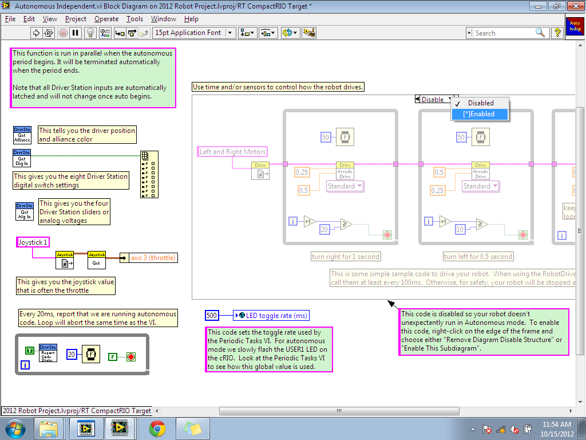
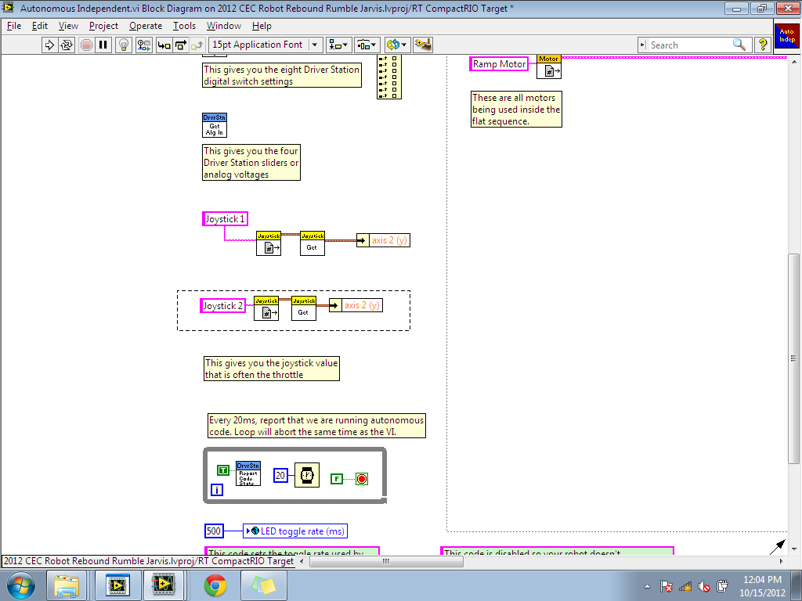
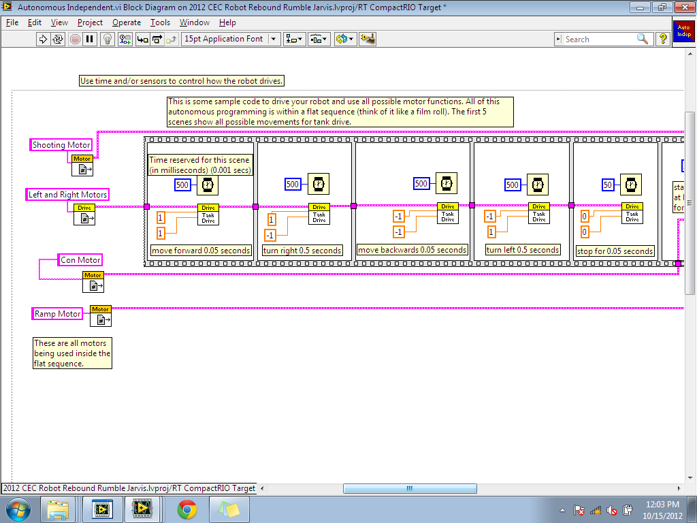
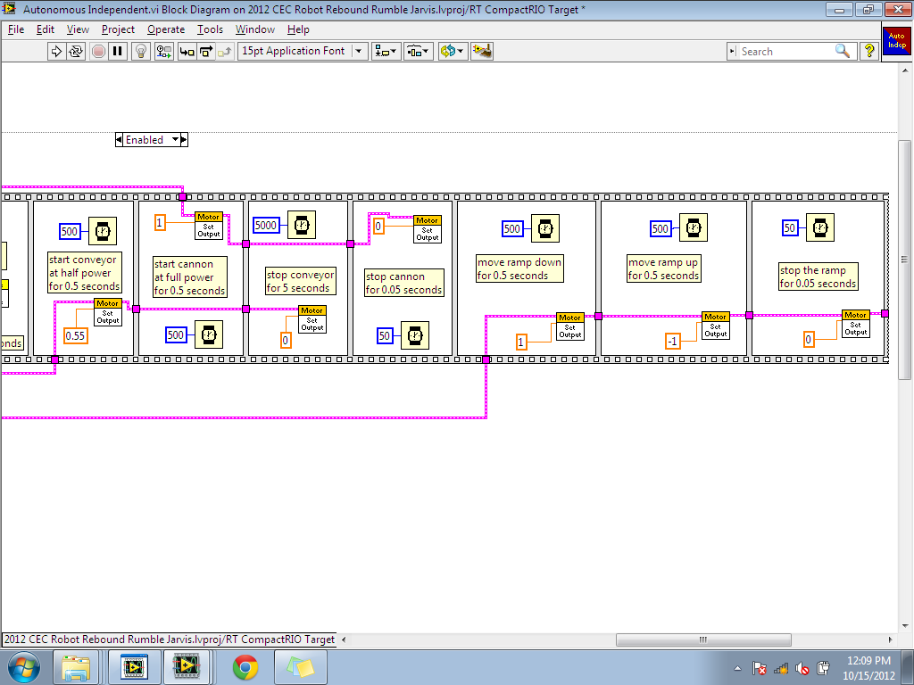

Autonomous
Autonomous is a VI that handles the robot's independent movements. In the FRC tournaments, autonomous is usually a 15-30 second period that occurs at the start of a match. This period can be used to gain a slight edge over the game. During this small period, players are not allowed to control the robot, and must let the robot run by itself for a certain amount of time.
Upon entering the Autonomous VI, you will be shown something similar to this. This VI is, by default, disabled for the safety of your robot. Simply enable the loop and begin adding to the program.
{kind=link}
The first thing you should add/modify is the joystick input for autonomous. For some reason, autonomous requires the joystick input of both steering wheels. As shown in the picture, we've modify the first joystick to accept the y axis, and added a second joystick that does the same.
{kind=link}
Now, to add to autonomous, you must program inside the giant loop structure. Inside the loop, call all the motors you intend to use. In the picture, our team called all of our motors and connected it into a flat sequence.
{kind=link}
Flat sequence structures are a lot like a film roll, hence why they look like one. What this sequence does is primarily run a single scene/frame one step at a time. So, at the beginning, it will run the drive motors for half a second, then turn right for another half, move backwards for another half, turn left for another half, and then stop the drive motors (As shown in the picture above).
As seen in both picture, the flat sequence can become very long, literally. If you need more than a picture to understand the autonomous VI, simply download our 2012 LabVIEW Robot Project on our homepage.
{kind=link}